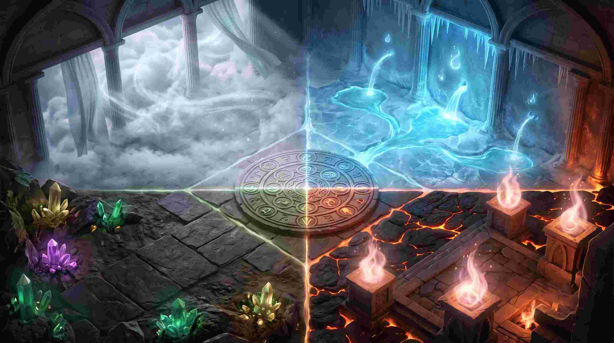

क्या आपने कभी गौर किया है कि किसी विशेष घर या कमरे में प्रवेश करते ही आपको अचानक भारीपन, थकान या घबराहट महसूस होने लगती है? इसके विपरीत, कुछ जगहों पर जाते ही आपका मन अकारण ही शांत और प्रफुल्लित हो जाता है। क्या यह सिर्फ एक मनोवैज्ञानिक (Psychological) भ्रम है? वास्तु शास्त्र के अनुसार घर की दिशा, रोशनी और हवा का हमारे मन पर असर पड़ता है।
एक वैदिक ज्योतिषी होने के नाते, मैं वास्तु शास्त्र (Vastu Shastra) को अंधविश्वास या सिर्फ फर्नीचर खिसकाने की कला नहीं मानता। वास्तु दिशाओं, पंचतत्व, सूर्य के प्रकाश और हवा के प्रवाह को ध्यान में रखकर घर को सुखद और संतुलित बनाने की प्राचीन विद्या है।
"वास्तु शास्त्र का मूल सिद्धांत है: जैसा ब्रह्मांड में है (Macrocosm), वैसा ही मानव शरीर में है (Microcosm), और वैसा ही उस घर में होना चाहिए जहां वह शरीर रहता है।"
1. वास्तु पुरुष मंडल (Vastu Purusha Mandala): घर की एनाटॉमी (Anatomy)
प्राचीन ऋषियों ने घर के नक्शे को एक जीवित प्राणी माना है, जिसे 'वास्तु पुरुष' कहते हैं। जैसे मानव शरीर में विभिन्न अंग होते हैं, वैसे ही घर के विभिन्न कोनों को ऊर्जा के विशिष्ट अंगों के रूप में विभाजित किया गया है।

चार मुख्य दिशाएं और शरीर के अंग:
- ईशान कोण (North-East / Water Element): यह घर का सबसे पवित्र कोना माना जाता है और जल तत्व को दर्शाता है। यहाँ पूजा-स्थान रखना शुभ है। इस दिशा में भारी निर्माण, कूड़ा या शौचालय होने को वास्तु दोष माना जाता है, जिससे मानसिक अशांति और निर्णय लेने में उलझन बढ़ती है।
- आग्नेय कोण (South-East / Fire Element): यह अग्नि तत्व की दिशा है, इसलिए रसोई के लिए सबसे उपयुक्त मानी जाती है। यहाँ पानी का टैंक बनाना वास्तु दोष माना जाता है, जिससे घर के 'कैश फ्लो' (Cash Flow) में रुकावट आती है।
- नैऋत्य कोण (South-West / Earth Element): यह पृथ्वी तत्व की दिशा है और घर को स्थिरता (Stability) देती है। घर के मुखिया (Head of the family) का कमरा यहीं होना चाहिए। यदि यह दिशा कमजोर या कटी हुई हो, तो जीवन में स्थायित्व की कमी मानी जाती है।
- वायव्य कोण (North-West / Air Element): यह वायु तत्व की दिशा है और गति (Movement) व नेटवर्किंग का कारक है। यहाँ वास्तु दोष होने पर कोर्ट-कचहरी के मामले और मन की अस्थिरता जैसी समस्याएं मानी जाती हैं।
3. ब्रह्मस्थान (Brahmasthan): घर का धड़कता हुआ हृदय
ब्रह्मस्थान घर का बिल्कुल मध्य भाग (Center) होता है। जिस प्रकार मानव शरीर में नाभि (Navel) या हृदय सबसे महत्वपूर्ण होता है, वैसे ही घर का पूरा ऊर्जा संचार ब्रह्मस्थान से ही होता है।
प्राचीन काल के आंगनों (Courtyards) वाले घरों में यह स्थान हमेशा खुला रखा जाता था ताकि सूर्य का प्रकाश और हवा सीधे घर में आ सके। आज के आधुनिक फ्लैट्स (Apartments) में, यदि आपने घर के बिल्कुल बीचों-बीच भारी डाइनिंग टेबल, कोई पिलर (Pillar), या सबसे खराब—शौचालय (Toilet) बना रखा है, तो उस घर में कभी शांति नहीं आ सकती। वास्तु के अनुसार घर के केंद्र में भारी अवरोध परिवार में अशांति और आर्थिक रुकावट का कारण माना जाता है। ब्रह्मस्थान को हमेशा खाली, साफ और हल्का (Clutter-free) रखें।
4. आधुनिक फ्लैट्स में वास्तु दोष: बिना तोड़-फोड़ के सरल उपाय (Remedies)
कई लोग वास्तु दोष सुनकर डर जाते हैं कि अब पूरा घर तोड़ना पड़ेगा। लेकिन 'एनर्जी अलाइनमेंट' (Energy Alignment) के लिए घर तोड़ने की जरूरत नहीं होती। आप रंगों (Colors), धातुओं (Metals) और प्राकृतिक तत्वों से ऊर्जा को बैलेंस कर सकते हैं:
- रंगों का चयन: हर दिशा का अपना एक रंग होता है। उत्तर-पूर्व (NE) में हल्के नीले (Light Blue) या क्रीम रंग का प्रयोग करें। दक्षिण-पूर्व (SE) किचन में हल्का लाल या पीच रंग सकारात्मक अग्नि पैदा करता है। गलत दिशा में गलत रंग (जैसे उत्तर में लाल रंग) वास्तु दोष पैदा करता है।
- समुद्री नमक (Sea Salt) का पारंपरिक उपाय: यदि घर में बहुत ज्यादा नकारात्मक ऊर्जा या झगड़े रहते हैं, तो पोंछा लगाते समय पानी में थोड़ा सा खड़ा समुद्री नमक मिला लें। परंपरा में नमक को नकारात्मकता दूर करने वाला माना जाता है।
- पौधों का प्रयोग (Botanical Vastu): तुलसी, स्नेक प्लांट (Spider Plant), और मनी प्लांट हवा को तो साफ करते ही हैं, साथ ही ये घर की 'प्राण ऊर्जा' (Prana) को भी बढ़ाते हैं। लेकिन ध्यान रहे, कैक्टस या दूध निकलने वाले कंटीले पौधे घर के अंदर (विशेषकर बेडरूम में) कभी नहीं रखने चाहिए।
- आईने का नियम (Mirrors): आईना ऊर्जा को रिफ्लेक्ट (Reflect) करता है। यदि आपके बेडरूम में आईना इस तरह रखा है कि सोते समय उसमें आपका शरीर दिखता है, तो यह आपकी ऊर्जा को पूरी रात ड्रेन (Drain) करता रहेगा, जिससे आप सुबह थका हुआ महसूस करेंगे। आईने को हमेशा उत्तर या पूर्व की दीवार पर लगाना चाहिए।
निष्कर्ष: आपका घर आपका मंदिर है
वास्तु शास्त्र कोई जादू-टोना नहीं है। यह घर और प्रकृति के बीच सामंजस्य बिठाने की सबसे पुरानी भारतीय विद्या है। यदि करियर में रुकावट आ रही है, या घर में बिना बात के कलेश हो रहा है, तो एक बार अपनी जन्म कुंडली (Kundali) और अपने घर के वास्तु (Vastu) दोनों का गहराई से विश्लेषण करवाएं।
याद रखें, एक सुखद और व्यवस्थित घर पूरे परिवार को ऊर्जा देता है। अपने घर को साफ, हवादार और व्यवस्थित रखें, और सरल वास्तु नियमों का पालन करें — घर में सुख-शांति अपने आप बढ़ेगी।